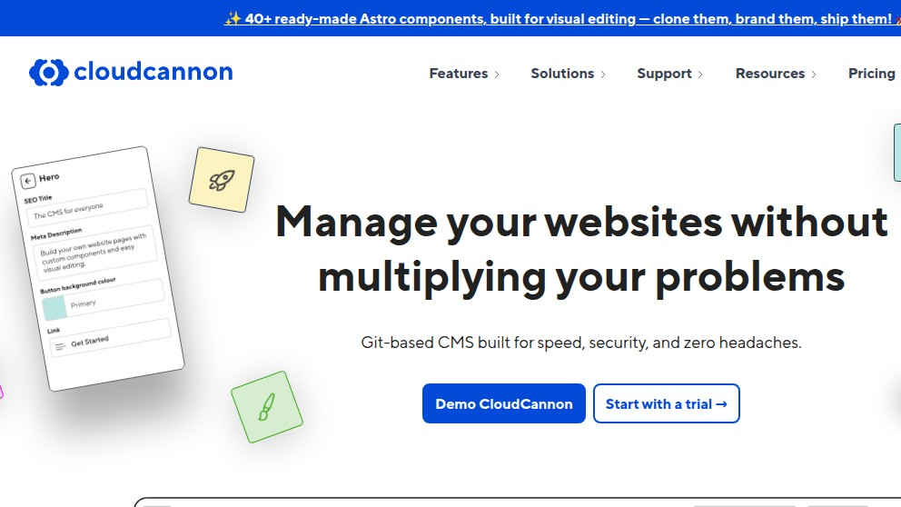
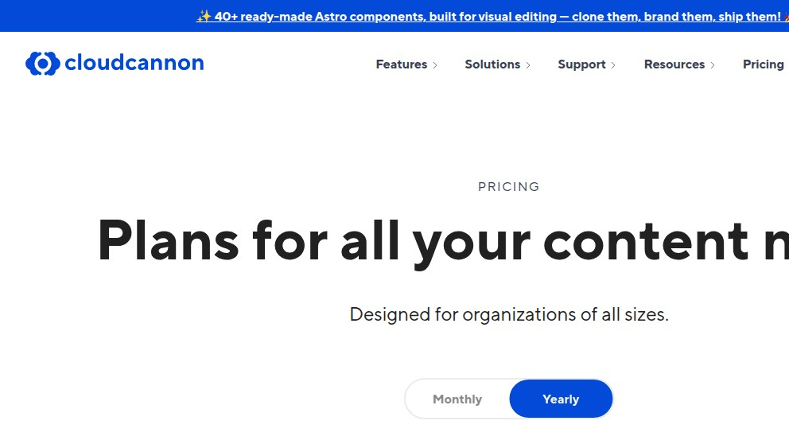
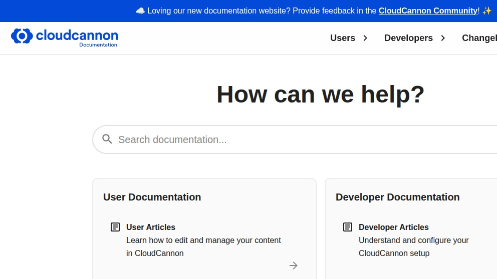
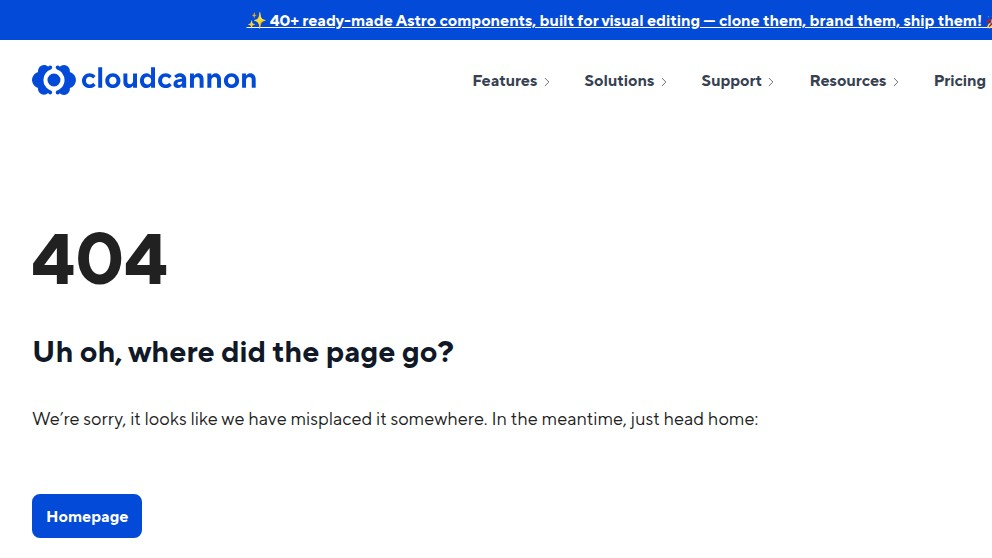
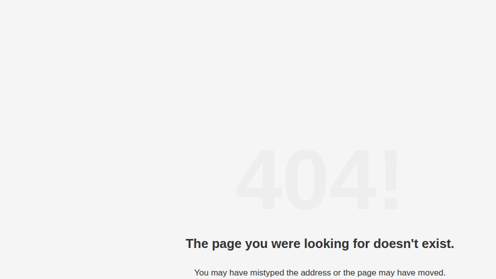

CloudCannon in 2026: a SaaS git-CMS, $55/site, and the Forestry redirect that didn't lead here
CloudCannon is the granddaddy of the "CMS for static sites" category — they were running visual editing on Jekyll repos in 2014, years before Netlify CMS (now Decap) or TinaCMS existed. In 2022 they bought Forestry.io, the other big player. Three years on we wanted to see how their public surface holds up: pricing, docs, the migration path for the Forestry cohort, and the question every team asks before signing a SaaS contract — what do we get for the money that we couldn't run ourselves on a Decap admin and a GitHub Action? We did the boring version: real curl, real screenshots, no NDAs, no enterprise call.
Demo: SimpleReview on a CloudCannon issue

We're the team behind SimpleReview, a Chrome extension that turns the element you click on a broken admin into a draft code-fix PR. We're not affiliated with CloudCannon, we don't host a paid customer site there, and nothing here is from a sales call or NDA briefing. This is a scout-mode write-up from one Linux box with curl and headless Chromium against the public marketing site on the date above. Numbers come from the public pricing page, not a quote. If something below is out of date or wrong, open a GitHub issue and we'll fix the page.
What CloudCannon actually is, in one paragraph
CloudCannon is a fully-managed SaaS that runs your Jekyll, Hugo, Eleventy, Astro, or SvelteKit build for you, hosts the result on their CDN, and bolts a WYSIWYG editor on top of the Markdown / data files in your git repo. You connect a GitHub, GitLab, Bitbucket, or Azure DevOps repo; their build farm clones it, runs hugo or jekyll build or npx astro build on every push; non-technical editors get a visual editor that commits Markdown / data-file changes back to a branch; the same farm rebuilds and serves. It's the same idea Decap and TinaCMS implement open-source — content lives in git, not a database — but instead of you stitching together a build pipeline, an OAuth provider, and a host, CloudCannon owns all three.
Practically: if you've been building Jekyll sites for clients and the friction was always "the editor wants to fix a typo without learning git", CloudCannon is the path of least resistance. If you're a solo developer who's already comfortable with git push → Cloudflare Pages, you're paying $55/month for problems you don't have.
The marketing site, taken at face value

cloudcannon.com on 2026-05-07. Tagline is "Git-based CMS built for speed, security, and zero headaches". The hero animation cycles through a Jekyll-style page being edited in their visual editor. The pinned banner up top advertises forty Astro components — Astro is clearly the SSG they're betting on for the next cohort, after Jekyll's slow decline and Hugo's plateau.Curl is more useful than the visual: the homepage is served behind Cloudflare with a public cf-ray, cf-cache-status: HIT, and a custom cc-cache-status / cc-perf pair. The access-control-allow-origin: https://app.cloudcannon.com header tells you the SaaS app domain is split off the marketing one, which is the right architecture for a CMS but worth knowing if you're SSO-debugging:
$ curl -sI https://cloudcannon.com/
HTTP/2 200
content-type: text/html; charset=utf-8
cf-ray: 9f869fab585f3a9a-FRA
cf-cache-status: HIT
access-control-allow-origin: https://app.cloudcannon.com
cache-control: s-maxage=2419200, max-age=0, must-revalidate, public
cc-build-id: 21598202
cc-cache-status: HIT
cc-perf: fetch-headers=29;t=31That cc-build-id: 21598202 is interesting — it's the same kind of build identifier their customers' sites would carry, exposed on their own marketing site. CloudCannon eats its own dog food, which is reassuring.
Pricing: what $10, $55, and $350 actually buy

cloudcannon.com/pricing hero. Toggle defaults to Yearly (cheaper-looking sticker price). Numbers below are extracted from the page HTML, not a quote.The four public tiers, scraped straight out of the rendered page (yearly billing):
| Plan | Price (yearly) | Per… | Headline scope |
|---|---|---|---|
| Lite | $10/mo | per site | 20 GB bandwidth, 1 custom domain |
| Standard | $55/mo | per site | 110 GB bandwidth, 5 custom domains, marked "Recommended" |
| Team | $350/mo | per site | Build deploys, professional services line item |
| Enterprise | — (call us) | — | SSO, audit log, sales-led |
The pricing model is per-site, not per-user (users are $10/month per user on top of the site fee for shared roles). For a freelancer running ten small client sites, that's 10 × $10 = $100/mo on the Lite tier — but Lite gives you 20 GB bandwidth per site and one custom domain, which is realistic for a small business. For a single corporate site with five locales and a content team of three, the Standard plan plus three users is $55 + 3×$10 = $85/mo. Team at $350/site only makes sense when you're benefiting from the build-deploy / professional-services line items, which is shorthand for "we'll help your team migrate".
The Decap / TinaCMS comparison is unflattering on raw cost: a Decap admin on Cloudflare Pages with a Workers OAuth proxy is $0/mo at this traffic level. The honest answer for the price gap is that CloudCannon is selling the same thing AWS sells against EC2-on-bare-metal — they own the operational burden. If your editor is non-technical and the cost of a one-week debugging session for "the GitHub OAuth flow stopped working" exceeds $700, CloudCannon's price is justified. If you have a developer on retainer, it's not.
Documentation: refreshed in 2026, search-first

cloudcannon.com/documentation/ on 2026-05-07. The blue banner reads "Loving our new documentation website? Provide feedback in the CloudCannon Community" — meaning the docs site itself is fresh enough that they're still soliciting feedback on it. Two tracks (Users vs Developers) is the right split for a tool that has to onboard editors and devs at once.The split into User / Developer is meaningful: editor-facing docs talk about visual editing, the slug field, and managing assets; developer docs cover the cloudcannon.config.yml manifest, build hooks, and the SDK for embedding their editor mode into a custom UI. Decap and TinaCMS docs are written for one audience (developers), which is fine for their open-source positioning but less workable when the customer is "marketing director who needs a CMS for the dev team they hired".
The Forestry acquisition, three years later
In April 2022 CloudCannon bought Forestry.io, until then the second-biggest git-based SaaS CMS. The acquisition was supposed to consolidate the category. By 2026 the picture is messier than that.
$ curl -sI https://cloudcannon.com/forestry-migration/
HTTP/2 404
$ curl -sI https://cloudcannon.com/forestry/
HTTP/2 404
$ curl -sI https://cloudcannon.com/documentation/articles/migrate-from-forestry/
HTTP/2 404
$ curl -sI https://forestry.io/
HTTP/2 301
location: https://tina.io/forestry/
https://cloudcannon.com/forestry-migration/ in a real browser tab. CloudCannon's friendly 404 — except the page being missing is the story.The acquiring company's marketing site no longer surfaces a Forestry migration entry point we could find from the obvious URLs. Meanwhile forestry.io itself 301-redirects to tina.io/forestry/ — TinaCMS, a competitor, captured the SEO destination of Forestry's domain. We did not test the Forestry app login, and CloudCannon's documentation search may surface migration content for logged-in users; the public-facing path is what's missing.
Three years is a long time. The cohort of Forestry users who hadn't migrated by 2024 had every chance to, and CloudCannon-the-product clearly absorbed Forestry-the-team. But the public artifact tells a story: the Forestry brand SEO went to a competitor, the migration landing page on the acquirer is 404, and the most popular community migration walkthrough on Google still resolves to a third-party blog post from 2023.
For a buyer evaluating CloudCannon today, this matters because acquisitions in the CMS space have a specific failure mode: the acquired customer base churns to whoever is loudest in the documentation channel during the migration window. If you're on Forestry in 2026 and you Google "forestry migration" the first hit is TinaCMS, not the company that owns Forestry. That's a marketing-ops gap, not a product gap, but it's a real signal about how the acquired userbase was treated.
The app domain: a mild surprise

https://app.cloudcannon.com/login in a real browser. There's no public login form at the obvious URL — login presumably goes through a different path or requires existing session state from the marketing site's "Start with a trial" button.This is fine — most SaaS apps gate the login URL on a redirect from the marketing site — but it's a small example of "the public surface is not the same as the customer surface". Decap and TinaCMS, by contrast, expose the entire admin to anyone who points a browser at their /admin/ folder. Different model, different threat surface; CloudCannon's is harder to fingerprint, which is the right call for a paid SaaS.
What we measured against the public site
| Metric | Value | Notes |
|---|---|---|
| Homepage HTML size | 217 KB | Single curl, gzipped on the wire |
| Pricing page HTML size | 406 KB | Pricing table renders without JS — good for SEO |
| Edge cache hit on Cloudflare | HIT | Both cf-cache-status and custom cc-cache-status |
| Time to first byte (homepage) | ~190 ms | EU server → Cloudflare FRA edge |
| Tier price floor | $10/mo | "Lite", per site, per editor seat extra |
| Recommended tier | $55/mo | "Standard", marked Recommended on the page |
| Forestry migration page | 404 | Across three obvious URL patterns |
| SSGs surfaced on hero | Hugo, Jekyll, 11ty, Astro, SvelteKit | Astro pinned in announcement banner |
Where CloudCannon fits, where it doesn't
CloudCannon is the right answer when: the editor is non-technical and the dev team's time is more expensive than $55/site/month; you want Jekyll or Hugo specifically (Astro support is newer, the polish around Jekyll is fifteen years deep); you're migrating from a WordPress monolith and you want a stepping-stone that keeps editor experience comparable while moving the architecture to static; the dev team has zero appetite for owning a build pipeline.
CloudCannon is the wrong answer when: you're a solo developer with a side-project blog (Decap on Cloudflare Pages is free and works); you have an opinionated build pipeline already (CloudCannon assumes it owns the build, working around that is fighting the product); the editor team is technical and PR-based content review is a feature, not a friction (in which case Decap's editorial workflow gives you the same flow at $0); you need a content database with relations, role-based permissions, and a media library for video — that's not what git-CMSes are for, look at Strapi or Directus.
Three things we'd change about the public site
- Bring back a Forestry migration entry point. Three years post-acquisition, the SEO destination of
forestry.iois on TinaCMS's page. A canonical CloudCannon-hosted migration guide that ranks for "forestry migration" would close the loop and stop the bleed of Forestry-cohort users to a competitor. - Show the per-user math on the pricing page. The headline is "$55/mo" but a real customer also pays $10/seat for editors and possibly more for build deploys. The yearly toggle is upfront; the per-seat add-on isn't. We had to scrape the HTML to pull
$10/month per userout — that's two extra friction points before "is this within budget?". - Lean into Astro on the hero, not just the announcement banner. The announcement bar reads "40+ ready-made Astro components, built for visual editing — clone them, brand them, ship them!" — which is the strongest commercial line on the whole site, but it's stuck in a dismissable strip. Astro is where the new mid-2020s static-site builds are landing; CloudCannon's bet is right, the placement on the page is wrong.
Where this fits
One short, honest write-up per CMS we run, deploy, or scout. Adjacent in the same series: Decap CMS 3.12 in 30 lines, TinaCMS self-host on Docker, Ghost 5 on Docker SQLite, Open WebUI on Linux Docker, Dify 1.14.0 docker-compose. SimpleReview is the Chrome extension that turns whatever element you click on a broken admin — including a CloudCannon visual-editor field that's autosaving the wrong slug — into a draft code-fix PR you can ship without leaving the page.